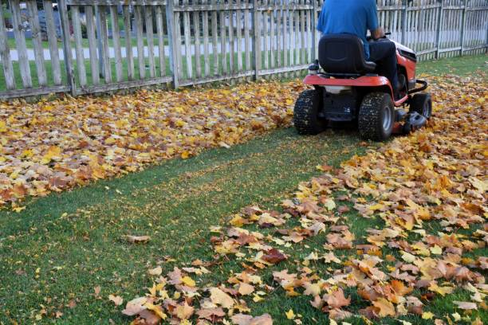

Gallatin Missouri
info@smotlawncare.xyz
Gallatin Missouri
info@smotlawncare.xyz

Top-quality lawn care services in Gallatin Missouri : Professional irrigation installation, soil testing, and seasonal maintenance to achieve a lush, well-maintained landscape for your home or business.
Click Here To Call Us (877) 848-1711Top-Quality Lawn Care Services in Gallatin Missouri
Maintaining a lush, healthy lawn in Gallatin Missouri can be challenging, but with Smot Lawn Care, you can achieve a beautiful outdoor space effortlessly. Our expert team offers comprehensive lawn care services tailored to the unique needs of your lawn, ensuring it stays green, vibrant, and weed-free year-round. From routine mowing and trimming to fertilization and aeration, we use industry-leading techniques to nurture your lawn's health and appearance.
At Smot Lawn Care, we understand that every lawn is different. Our customized care plans focus on soil type, grass variety, and seasonal conditions specific to Gallatin Missouri . We use eco-friendly, high-quality products to enrich the soil, promote deep root growth, and protect your lawn from pests and diseases.
We pride ourselves on delivering reliable and affordable services that enhance the curb appeal of your property. With our experienced team handling your lawn care, you'll enjoy a lush, green lawn that boosts your home’s value. Our commitment to customer satisfaction and detailed workmanship sets us apart as the best lawn care company in Gallatin Missouri .
Let Smot Lawn Care take the hassle out of lawn maintenance. Contact us today to schedule your lawn care services and experience the difference of working with Gallatin Missouri 's top lawn care professionals.
Residential & commercial lawn care
Quality services at affordable prices
Immediate 24/ 7 emergency services

Watering your lawn correctly is key to keeping it lush and green. At Smot Lawn Care, we often get asked, "How often should I water my lawn, and what's the best time to do it?" In Gallatin Missouri the best practice is to water your lawn deeply 2-3 times a week. Overwatering can lead to shallow root growth and make your grass more susceptible to drought and diseases.
The best time to water your lawn is early in the morning, ideally between 6 a.m. and 10 a.m. This allows the grass to absorb moisture before the sun’s heat causes evaporation. Watering in the evening might seem convenient, but it can leave the lawn damp overnight, increasing the risk of fungal growth.
For optimal lawn health, use about 1 inch of water per session, which helps promote deeper root development. Adjust your watering schedule based on the weather; lawns in Gallatin Missouri may need more frequent watering during hot, dry periods. Remember, it's not just about how often you water but how thoroughly you do it. Deep watering encourages roots to grow deeper, making your lawn more resilient.
Trust Smot Lawn Care to guide you in maintaining a healthy, vibrant lawn. With our expertise, your lawn in Gallatin Missouri will thrive year-round. Let us handle the hard work so you can enjoy a green, beautiful yard!
Residential & commercial lawn care
Quality services at affordable prices
Immediate 24/ 7 emergency services
Establishing new sod requires careful attention and care to ensure vibrant growth and longevity. Our lawn care services for new sod in Gallatin Missouri are designed to ensure your new lawn matures into a lush, healthy expanse. At lawn care, we understand the unique requirements for new sod, including watering, fertilization, and pest management. Our experienced team provides customized care plans to nurture your sod through those critical early weeks, maximizing root establishment and minimizing stress. We aim to set a foundation for your lawn that will withstand wear and tear. Trust us to support your lawn from the moment the sod is laid, leading to a flourishing green space you’ll appreciate for years to come.

A beautiful lawn can sometimes face challenges from diseases, affecting its health and appearance. Our lawn disease treatment services are designed to diagnose and manage these issues effectively. With our extensive knowledge of common lawn diseases specific to Gallatin Missouri we provide tailored treatments that restore your lawn to optimal health. Our emphasis on preventive care and early intervention aims to protect your investment and enhance the beauty of your landscape. Choose us for expert care that prioritizes the vitality of your lawn!

Simplify your lawn care with our comprehensive lawn maintenance packages in Gallatin Missouri . We understand that every lawn has unique needs, which is why our packages are customizable to fit various budgets and schedules. Whether you require weekly mowing, seasonal fertilization, or weed control, we create a package that ensures all essential services are covered throughout the year. Our commitment to quality means that every package includes professional service from our experienced team, ensuring your lawn remains healthy and attractive. Choose our maintenance packages for hassle-free care that delivers results.

The exterior of your business is your first opportunity to make a positive impression. Our commercial lawn care services in Gallatin Missouri are tailored to handle the unique needs of commercial properties. From landscaping and lawn maintenance to seasonal clean-ups, we deliver professional care designed to enhance your property’s attractiveness and maintain a welcoming environment for clients and employees. With our dedicated team and extensive experience, we ensure that your business stands out while providing a superior landscaping experience.
Give your lawn that polished look with our professional lawn edging services in Gallatin Missouri . A well-defined edge creates a crisp contrast between your lawn and garden beds, walkways, and driveways, enhancing the overall appearance of your landscape. Our team utilizes modern equipment to install and maintain clean and sharp edges around your lawn, ensuring neatness and helping to prevent grass intrusion into flower beds. With our expertise in lawn edging, your property will have a more structured and manicured look that shows off your attention to detail and commitment to quality.
Searching for lawn care specialists near you Our dedicated team comprises experienced professionals who are passionate about enhancing the health and beauty of your lawn. We understand the challenges posed by the local climate, soil conditions, and common pest problems, allowing us to provide tailored solutions that deliver exceptional results. Our specialists are equipped with the latest resources and techniques to address your unique lawn care needs, whether it be routine maintenance, one-time treatments, or comprehensive landscaping projects. When you choose us, you can rest assured that your lawn is in the hands of experts who truly care.

Consistent care is the key to a thriving lawn. Our weekly lawn care services in Gallatin Missouri ensure your lawn receives the attention it needs to remain healthy and vibrant. With our dedicated team at lawn care, we offer regular mowing and maintenance services tailored to the growth pattern and seasonal needs of your lawn. Our professionals arrive on schedule, equipped with the latest tools and techniques to maintain your landscaping's beauty and health. By opting for our weekly lawn care services, you free yourself from the ongoing worry of lawn maintenance while enjoying an effortlessly pristine outdoor space.

Every lawn is unique, requiring personalized attention and care. Our custom lawn care plans are designed to cater to the specific needs of your grass and landscaping. We start with a thorough assessment of your property, understanding its unique challenges and requirements. Our experts then create a tailored plan that encompasses all necessary services from mowing and fertilization to disease management and seasonal preparation. Choose us for best-in-class service, dedicated expertise, and a customized approach that ensures your lawn remains healthy and beautiful year-round!
Years Experience
Expert Technicians
Satisfied Clients
Compleate Projects
At Smot Lawn Care, we pride ourselves on being the premier choice for lawn care services across Gallatin Missouri . Our commitment to excellence and attention to detail set us apart from the competition, ensuring that your lawn remains healthy, vibrant, and the envy of your neighborhood.
Why choose Smot Lawn Care? Our experienced team of professionals uses the latest techniques and high-quality products to deliver exceptional results. From expert lawn mowing and fertilization to effective weed and pest control, we offer a comprehensive range of services designed to meet your lawn's unique needs. Our approach is personalized, with tailored solutions that address the specific requirements of your yard, ensuring that you receive the best care possible.
We understand the importance of a well-maintained lawn, not just for aesthetics but also for the health of your outdoor space. That’s why we use advanced equipment and environmentally friendly practices to promote a lush, green lawn while protecting the surrounding ecosystem.
Our dedication to customer satisfaction is unmatched. We offer reliable, affordable services with a focus on quality and consistency. Whether you need seasonal maintenance or ongoing care, Smot Lawn Care is here to provide exceptional service and outstanding results.
Choose Smot Lawn Care in Gallatin Missouri and experience the difference that professional, personalized lawn care can make. Contact us today to schedule your consultation and see why we’re the trusted choice for all your lawn care needs.
Searching for reputable lawn care services near you? Look no further! Our team of seasoned lawn care professionals in Gallatin Missouri is dedicated to transforming your outdoor spaces into vibrant, healthy landscapes. With our expertise, we handle everything from mowing and trimming to fertilization and pest control. We ensure your lawn receives the attention it deserves, tailored to meet your specific needs. We use high-quality products and sustainable practices to ensure your lawn remains healthy year-round, while minimizing our environmental footprint. Choose us for our commitment to excellence, our local knowledge, and our ability to create tailored solutions that suit your unique lawn care requirements. Experience the joy of a lush, green lawn that is the envy of your neighborhood!
Your home is your sanctuary, and nothing enhances its beauty like a well-maintained lawn. Our residential lawn care services are designed to provide homeowners with comprehensive care, ensuring your lawn flourishes throughout the seasons. From routine mowing to specialized treatments like aeration and fertilization, our team applies industry-leading practices that promote growth and health. We focus on understanding the specific needs of your lawn, which allows us to provide customized solutions tailored to your landscape. Our affordable pricing and dedication to customer satisfaction make us the preferred choice among homeowners in Gallatin Missouri . Choose us for reliable service, professional staff, and the kind of care your property deserves — because a beautiful lawn adds value to your home!
Ideal lawn care doesn’t have to break the bank. Our affordable lawn care services in Gallatin Missouri provide high-quality solutions at prices that won’t strain your budget. We understand the local climate and soil conditions perfectly, which helps us deliver tailored services that fit your specific lawn care needs without compromising quality. Every service, whether it’s lawn mowing, fertilization, or pest control, is performed by skilled professionals who are passionate about maintaining lush, green lawns throughout Gallatin Missouri . With our focus on customer satisfaction, we strive to exceed your expectations every step of the way. Choose us for commitment to excellence, proven results, and a beautiful lawn at a price you can afford!
Supporting local businesses is important, and at lawn care, we are proud to be a trusted local lawn care company in Gallatin Missouri . Our deep understanding of the regional climate, soil conditions, and common pests enables us to provide tailored services that ensure your lawn thrives. We prioritize customer satisfaction and maintain transparency in all our dealings. By choosing us, you're not only ensuring your lawn gets the best care but also supporting your local economy. Our team is passionate about contributing to our community and making Gallatin Missouri a greener place.
When it comes to lawn care, settling for anything less than the best is not an option. At lawn care, we offer the best lawn care services by combining experience, knowledge, and commitment to our customers. Our highly skilled team employs advanced techniques and sustainable practices to ensure your lawn remains vibrant and healthy throughout the year. Whether you need regular mowing or complex landscaping services, we take pride in offering a wide range of options tailored to meet your specific needs. Experience unmatched quality and let us help you achieve a stunning landscape.
A well-mowed lawn is the cornerstone of a great landscape. Our professional lawn mowing services are crafted to keep your yard looking crisp and clean. Regular mowing doesn't just enhance the aesthetics of your property; it encourages healthy grass growth and eliminates potential weeds. We use top-quality equipment and techniques tailored specifically for your lawn type and terrain. Our experienced crew guarantees precision and care in every mow. Choose us for timely service, attention to detail, and a commitment to maintaining the beauty of your lawn. We provide the best lawn mowing services that make your outdoor area a point of pride!
Professional lawn care is an investment in your property’s aesthetics and long-term health. At lawn care, we provide comprehensive professional lawn care services that include everything from soil testing to fertilization and pest control. Our team consists of certified professionals who stay up-to-date with the latest trends and technology in lawn care. We offer customized plans that cater to your specific needs, ensuring the best results. Trust us for professional care that fosters a thriving lawn and enhances your overall property value.
Fertilizing your lawn is crucial for maintaining its health and vibrancy. At lawn care, we offer expert lawn fertilization services tailored to the unique requirements of your lawn . Our team uses high-quality fertilizers that promote robust growth, enhance color, and improve soil structure. We also offer soil analysis to determine the specific nutrients needed for your lawn’s optimal health. With our advanced fertilization techniques and commitment to quality, we ensure that your lawn receives the right nutrients at the right time.
Weeds can quickly turn a healthy lawn into an eyesore. Our lawn weed control services in Gallatin Missouri are designed to identify, manage, and eradicate unwanted weeds while promoting the health of your grass. At lawn care, we use a combination of pre-emergent and post-emergent treatments tailored to the specific weeds prevalent in the area. Our knowledgeable team is trained to recognize invasive species and apply the latest safe and effective methods to control them, focusing on preserving your desired grasses. We take a preventative stance to manage weeds efficiently, allowing your lawn to thrive. Choose us for your weed control needs and enjoy a lush, weed-free lawn that you can be proud of.
Aeration is an essential process for maintaining a healthy lawn. Our lawn aeration services in Gallatin Missouri help relieve soil compaction, improve root growth, and enhance moisture and nutrient absorption. At lawn care, we utilize professional-grade aerators that efficiently remove plugs of soil, allowing air, water, and nutrients to penetrate deeply into the earth. The result is a thicker, greener lawn that withstands stress from drought and foot traffic. Our team provides expert guidance on the ideal timing and frequency of aeration for your specific lawn type, ensuring optimal results. With our commitment to enhancing your lawn's health and vitality, you can trust us to help you achieve the lush lawn of your dreams.
Each season presents unique challenges and opportunities for maintaining a beautiful lawn. Our seasonal lawn care services in Gallatin Missouri are designed to keep your yard in peak condition year-round. Whether it’s spring preparations, summer mowing, fall leaf cleanup, or winterizing your lawn, our expert team knows precisely how to care for your lawn through every transition. We offer tailored services that may include fertilization, overseeding, and pest management, ensuring your lawn receives the appropriate care it needs as the seasons change. Relying on our expertise enables you to enjoy a vibrant lawn no matter the time of year.
Establishing a lush lawn often starts with professional lawn seeding. Our lawn seeding services are designed to ensure optimum germination and growth through expert techniques and high-quality seeds. At lawn care, we assess your lawn's current condition and identify the best seeding strategies to achieve the healthy and lush lawn you desire. We provide both overseeding, to patch bare patches and improve density, and new seeding services for new lawns. Using top-tier seeds suited to the local climate and soil conditions, we guarantee a beautiful lawn that flourishes. Trust our expertise in lawn seeding for quick, effective, and sustainable results.
Keeping a lawn beautiful requires consistent care and maintenance. Our comprehensive lawn care maintenance services in Gallatin Missouri are tailored to ensure your lawn stays healthy and attractive throughout the year. At lawn care, we provide a full range of services, including mowing, fertilization, aeration, weed and pest control, and seasonal clean-up. Our experienced team works diligently to create a schedule that meets the specific needs of your lawn, ensuring it gets the attention it requires. We utilize environmentally-friendly products and methods to enhance your lawn’s appearance sustainably. By choosing our maintenance services, you'll enjoy the peace of mind that comes with knowing your lawn is expertly cared for by professionals who treat it as their own.
The beauty of a well-maintained lawn is often amplified by professional landscaping. At lawn care, we offer integrated lawn care and landscaping services ensuring your exterior spaces are simultaneously beautiful and functional. Our team specializes in designing landscapes that complement your lawn while considering your preferences and the local ecosystem. From planting trees and shrubs to creating garden beds, we can transform your outdoor space into a picturesque landscape. Our lawn care services ensure that all of our landscaping flourishes, resulting in a cohesive outdoor aesthetic that you can be proud of. Choose us to manage both your lawn care and landscaping needs for an elegant and well-crafted outdoor environment.
Concern for the environment should not interfere with lawn care aspirations. Our organic lawn care services in Gallatin Missouri utilize only natural, non-toxic products to create beautiful, sustainable lawns. At lawn care, our organic approach to lawn care emphasizes eco-friendly practices that protect the health of your family, pets, and the planet. We provide organic fertilization, weed control, aeration, and pest management solutions that yield striking results without harmful chemicals. Our knowledgeable team ensures that every treatment is tailored to the specific needs of your lawn while promoting biodiversity and soil health. If you're seeking a greener way to maintain your lawn, our organic lawn care services are the perfect choice.
Protecting your lawn from pests is essential for maintaining its health and beauty. Our lawn pest control services target invasive species that threaten to undermine your lawn’s vitality. At lawn care, we utilize various environmentally-friendly methods to manage pest populations while safeguarding beneficial insects and the surrounding ecosystem. We start with comprehensive assessments to identify pest issues and create tailored treatment plans that effectively eliminate pests without harming your loved ones or the environment. From grubs to aphids, we handle it all. Choose us for expert lawn pest control services that keep your lawn healthy and beautiful.
Proper hydration is vital to maintaining a vibrant lawn. Our lawn irrigation services are designed to ensure your lawn receives the right amount of water, optimizing growth and appearance. We provide customized irrigation solutions tailored to your lawn's specific needs and local water regulations. Our team of experts designs and maintains efficient systems that promote water conservation while delivering consistent moisture to your grass. Choose us for professionalism, innovation, and a healthier lawn that flourishes sustainably!
Preventing weeds from overtaking your lawn is crucial for maintaining a lush, healthy landscape in Gallatin Missouri . At Smot Lawn Care, we understand the challenges of weed control and are here to help you keep your lawn in top condition.
Weed prevention begins with a strong, healthy lawn. The best defense against weeds is a dense turf that crowds out invaders. Regular mowing, ideally at a height of 2.5 to 3 inches, helps your grass grow thick and reduces weed establishment. Avoid cutting more than one-third of the grass height at a time to prevent stress and promote stronger growth.
Fertilization is another key strategy. Properly fertilizing your lawn provides the essential nutrients for vigorous growth, making it harder for weeds to compete. Use a balanced fertilizer and follow a schedule appropriate for the season and your grass type.
Aeration is also important. By alleviating soil compaction and improving root growth, aeration helps your lawn better absorb water and nutrients, enhancing its resilience against weeds. Aim to aerate your lawn at least once a year, especially in high-traffic areas.
Mulching around garden beds and using pre-emergent herbicides can further prevent weed growth. These methods create a barrier that stops weed seeds from germinating while protecting your lawn from unwanted weeds.
For effective, tailored weed control solutions in Gallatin Missouri trust Smot Lawn Care to provide expert advice and services that ensure your lawn remains beautiful and weed-free. Contact us today to learn more about maintaining a pristine, healthy lawn.
Gallatin is a city in Daviess County, Missouri, United States. The population was 1,821 at the 2020 census. It is the county seat of Daviess County.
Signs include thin patches, bare spots, or overall decline in lawn health. Our team can assess and recommend reseeding in Gallatin Missouri .
Most lawns should be mowed every 1-2 weeks, depending on the growth rate and season in Gallatin Missouri .
Lawn aeration involves perforating the soil to allow air, water, and nutrients to penetrate roots. It's essential for a healthy lawn .
We recommend grass types suited to local climate conditions, including Kentucky bluegrass and fescue for Gallatin Missouri .
Yes, we offer effective weed control services to keep your lawn healthy and weed-free .
You can reach us by phone or visit our website to schedule services or request a free quote .
Yes, Smot Lawn Care provides professional lawn care services for commercial properties .
Regular maintenance, proper mowing, and using pre-emergent herbicides can help prevent weed growth in Gallatin Missouri .
Our experienced team uses best practices and high-quality products to ensure your lawn receives the best care .
Yes, we provide organic lawn care solutions that are safe for children and pets .
Water when grass blades start to wilt or turn a dull color; typically, lawns need about 1 inch of water per week .
Yes, we provide seasonal services including spring clean-ups and fall leaf removal in Gallatin Missouri .
Bare patches may require reseeding or sod installation. Our team can assess and recommend the best approach .
Improving drainage can involve aeration, topdressing, and creating proper grading. Our experts can evaluate your lawn .
Smot Lawn Care provides mowing, fertilization, aeration, weed control, and lawn maintenance services .
Yes, we offer integrated pest management solutions to protect your lawn from harmful pests in Gallatin Missouri .
Yes, we install efficient irrigation systems to keep your lawn healthy and hydrated .
Yes, we offer customized fertilization plans to promote healthy lawn growth in Gallatin Missouri .
Yes, our team can diagnose and treat common lawn diseases to restore your grass's health in Gallatin Missouri .
Yes, we offer mulch installation to help retain moisture and suppress weeds in your lawn in Gallatin Missouri .
Yes, we offer flexible scheduling options for regular lawn care services tailored to your needs in Gallatin Missouri .
The ideal mowing height varies by grass type, but generally, keeping it 2.5 to 3 inches promotes healthy growth .
The best times for fertilization are in early spring and fall when grass is actively growing in Gallatin Missouri .
Professional lawn care enhances curb appeal, promotes healthy growth, and saves you time and effort .
You can request a free estimate by contacting Smot Lawn Care via phone or through our website .
Our commitment to quality service, eco-friendly practices, and personalized care sets us apart .
Brown spots can be caused by drought, disease, or pests. Our experts can diagnose the issue and recommend solutions .
Absolutely! We can help you design a beautiful, functional lawn tailored to your space and lifestyle in Gallatin Missouri .
Preparing your lawn involves fertilization, aeration, and keeping it free of debris before winter sets in Gallatin Missouri .
Regular watering, mowing at the right height, and addressing any visible issues can help maintain your lawn in Gallatin Missouri .
“Smot Lawn Care did a wonderful job on my lawn in Gallatin Missouri . Their professional service and dedication were evident in the results. My lawn looks beautiful, and I highly recommend them!” – Sophie H.
Profession
“I’m very satisfied with Smot Lawn Care’s work in Gallatin Missouri . Their team was professional, efficient, and transformed my lawn into a lush, green space. Great service and results!” – Andrew K.
Profession
“If you need top-quality lawn care in Gallatin Missouri Smot Lawn Care is the way to go. Their team delivered excellent results, and my lawn has never looked better. Very pleased with their work!” – Paul R.
Profession
Gallatin MO lawn care Pros
(877) 848-1711
info@smotlawncare.xyz
09.00 AM - 09.00 PM
09.00 AM - 12.00 PM